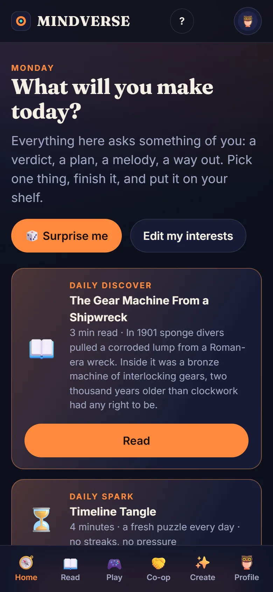
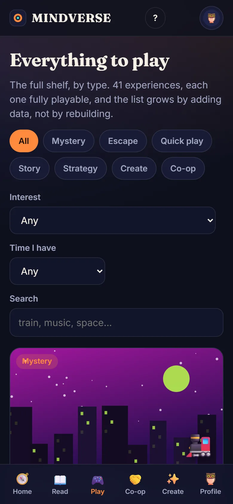
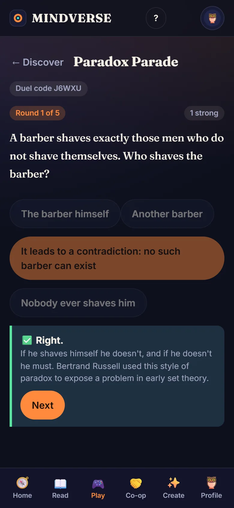
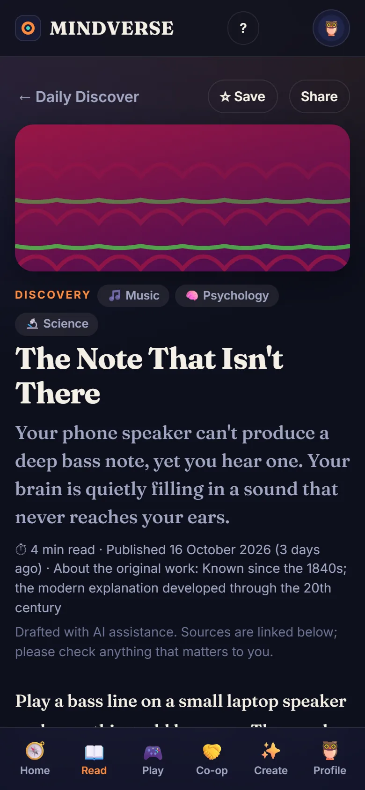
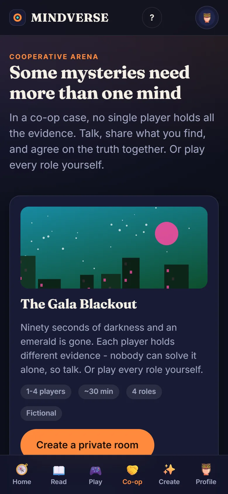
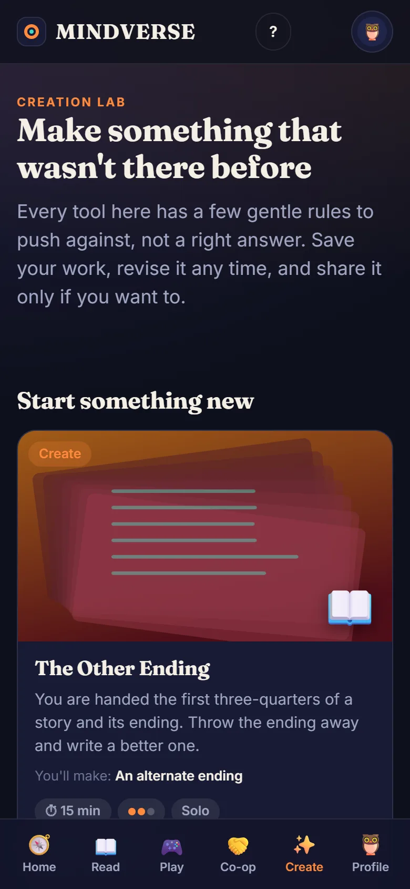
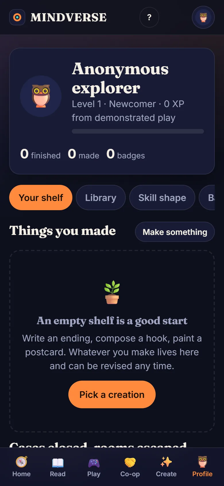

4.8 hours
is the average a US teen spends on social media every day, and 51% spend four hours or more.
Gallup, Oct 2023 · about 1,590 US teens · surveyed Jun-Jul 2023
A free Android app
MINDVERSE is entertainment you take part in. Crack a mystery, escape a room, run a tiny town, write a better ending, or read one short story worth knowing. Then put the phone down. There is no endless feed to fall into.

The problem
Large surveys agree: people spend hours a day on feeds, plenty of them wish it were less, and wishing is not the same as managing it. Each figure links to its source. Most of the best data is on US teenagers, but the pattern isn't only theirs.
4.8 hours
is the average a US teen spends on social media every day, and 51% spend four hours or more.
Gallup, Oct 2023 · about 1,590 US teens · surveyed Jun-Jul 2023
45%
of US teens now say they spend too much time on social media. That share was 36% in 2022 and 27% in 2023.
Wanting less is not the same as doing less. 44% of teens say they have cut back. Among those who say they spend too much time, only 49% have tried to cut back.
Pew Research Center, April 2025 · US teens aged 13-17 · surveyed Sep-Oct 2024
47 seconds
is how long people now stay on one screen before switching, down from 150 seconds in 2004 and 75 seconds in 2012. After an interruption it can take about 25 minutes to get back to a task.
Prof. Gloria Mark, UC Irvine (2023 interview describing her research). Workplace and lab observations of computer users, not a nationwide survey.
The idea
Our attention does best when it is used on something: a problem to untangle, a thing to make, a question to answer. So MINDVERSE asks something of you every time, and then lets you go.
Mysteries want evidence. Escape rooms want patience. Strategy games show you every rule and every cost.
24 topics, from space and music to food, sport, history and philosophy. You choose what interests you; it is not only for puzzle people.
Solve a case with up to three friends. Everyone holds different evidence, so nobody can do it alone.
Write an ending, compose a hook, paint a postcard, invent a fix for a daily annoyance, and share it if you like.
What is inside
Interview people, compare statements, build a timeline, then accuse, with evidence that would hold up in a courtroom.
Explore, collect, combine and crack codes. Hints are there, and they cost a few points.
Your choices change the ending. Every path has been checked so nobody gets stuck.
Run a harbour town, a corner café or a spacecraft. Every rule and cost is visible, and runs replay exactly.
Ciphers, patterns, spot-the-change, riddles and estimates in three to six minutes, plus a fresh Daily Spark.
Twenty short quizzes with a twist: pick, estimate or put things in order, with a clear explanation after every answer.
Private rooms for up to four. Different evidence for each player, a shared board, and a verdict everyone must agree on. Or play all the roles yourself.
Endings, melodies, pixel postcards, inventions and recipes, with revisions and an optional community gallery.
Short, sourced stories about how the world works, with things to try inside them. New ones appear without updating the app.
What you have opened keeps working without internet. New games and stories arrive when you reconnect.
No account needed. Sign in with Google only if you want your progress on another phone. Export or delete your data any time.
An optional one-a-day reminder at a time you choose. Stays on your phone. Off unless you turn it on.
A look inside






Our promises
XP comes from how well you play. A replay only adds the improvement. Time spent in the app earns nothing, and the app never counts it as interest.
Every recommendation says why. Every game's rules are visible. Random events come from a seed, so a run can be replayed.
Stories are sourced, hedged where the evidence is mixed, labelled when AI helped draft them, and published only when an editor approves them. Mistakes are corrected in public.
Download
This is an early build signed with a developer key and is not yet on Google Play, so Android or Play Protect may show a warning. You can check that your download is the same file we published by comparing its SHA-256 fingerprint:
5DF7E9025813C493A7E46DFCF143FA26DE21BBB50C9ECDE8DDB520866511F9DF
On Windows: certutil -hashfile MINDVERSE.apk SHA256. The app asks only for internet access, plus notification and alarm permission that is used only if you turn the optional daily reminder on.
Try the web version in any browser, on a phone or a computer, with nothing to install. It is the same game. (There is no iPhone app yet, so this is also the way to play on an iPhone.)
Try it in your browserQuestions
It is free, with no ads and nothing to buy. It runs on a free hosting tier, so there is a limit to how many people can use it at the same moment, and it is a personal project rather than a company.
No. Everything works on your own phone. An optional Google sign-in saves your progress, creations and bookmarks so they follow you to another device.
None for advertising and no tracking of how long you look at the screen. If you sign in, your profile, progress and creations are stored in your account so they can sync, and you can export or delete them in the app. This website uses no cookies and no analytics.
The app loads the latest games and stories from our servers. When an update is waiting, a small bar offers a Reload, and you choose when, so a game in progress is never interrupted.
Games and stories you have already opened keep working. New games and new stories appear once you reconnect.
They are written with AI assistance and labelled as such, each links to its sources, and they go live only when an editor approves them. They are not expert fact-checked, so check the sources for anything important.
Yes. The co-op case supports up to four players in a private room, and quick games have duel codes so you and a friend get the same puzzle.
There is not one yet. In Safari you can open the browser version and use Share, then Add to Home Screen.